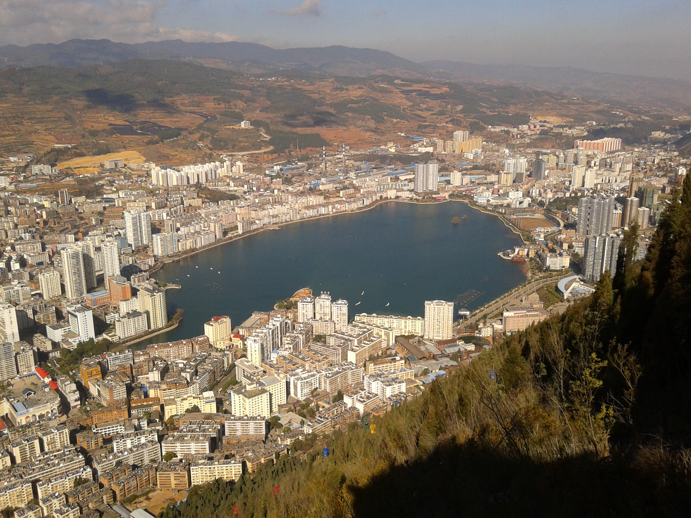

Shown here is Gejiu in Yunnan, China—the city where I was born and raised. The city developed around tin mining, prospered, and became connected to international markets amid French colonial expansion in the early 20th century. It later served as a regional political and economic center during much of the socialist era, before gradually losing momentum after the turn of the 21st century. This trajectory, and the ways in which state power and international forces shape the fortunes of places, has become an important source of my research interests.